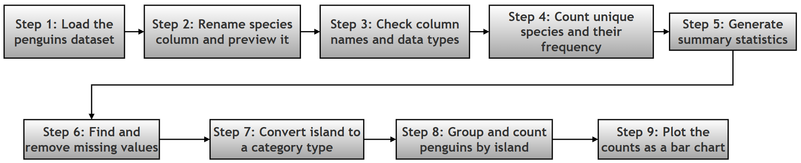

Project 1: Exploring the Palmer Penguins Dataset with Pandas¶
What this page covers¶
This page is a companion resource to the pandas chapter of the printed book. It walks through one complete, beginner-friendly data analysis project — from loading a dataset all the way to drawing a chart from it — using the Palmer Penguins dataset as the running example.
The printed book gives you the project brief (the "Research Project" below) and asks you to try solving it yourself before turning to this online resource. This page reproduces that brief exactly as printed, and then walks through one worked solution step by step, in far more depth than a printed page allows. Along the way it explains the pandas and Python concepts used (with links to the official documentation for anyone who wants to dig deeper), shows the actual output you should expect to see on your screen, and closes with a couple of diagrams that summarise the whole process visually.
You don't need to know anything more than basic Python and the pandas topics already covered earlier in this chapter (DataFrames, Series, and simple selection) to follow along. Everything else is explained as it comes up.
A quick map of what follows:
| Section | What's in it |
|---|---|
| The Research Project | The original project brief and the 9 tasks, exactly as printed in the book |
| Project 1 (Solution) | A full worked solution, step by step, with explanations, code, and real output |
| Object vs. Category | A deeper look at one of the trickiest beginner concepts in the project |
| The Complete Script | The entire solution as one single, runnable block |
| Change Log | A record of everything that was changed on this page compared to the original version |
The Research Project (as printed in the book)¶
The task list and expected outcomes in this section are reproduced unchanged from the printed book, so that this page still matches the question you were asked to solve. A few optional "bonus" questions have been added under some tasks — these are clearly marked and are not part of the original brief.
You are given a real-world dataset containing observations of penguins, including their species, island location, and physical measurements.
Problem Statement: Using Python and pandas, perform a structured analysis of the Palmer Penguins dataset to understand its composition, clean the data, and derive meaningful insights.
Tasks to Perform¶
1. Load the Dataset¶
Load the dataset into a pandas DataFrame from an appropriate source (Excel/CSV/online dataset). Determine the size of the dataset (number of rows and columns).
Bonus: Once you've loaded it one way, can you also load it using a different source (say, the CSV link instead of the built-in seaborn copy)? Do the row and column counts match?
2. Explore the Structure¶
Display the column names and data types. View a small sample of the dataset. Present the data in a way that makes all column names easy to read at once.
3. Work with Individual Columns¶
Select a categorical column (such as species). Display a few sample values from this column.
4. Analyze Categorical Data¶
- Determine how many unique categories exist.
- Count the number of occurrences of each category.
Bonus: Which island has the most penguins? Which species is the rarest in this dataset?
5. Generate Summary Statistics¶
- Produce a statistical summary of the dataset.
- Compare how summary statistics differ for numeric and non-numeric columns.
6. Handle Missing Data¶
- Identify columns with missing values.
- Apply an appropriate strategy to handle missing data.
- Verify that the issue has been resolved.
Bonus: Instead of dropping the missing rows, could you have filled them in instead? What would you have filled a missing
sexvalue with, and why might that be a bad idea here?
7. Improve Data Types¶
- Identify columns where data types can be optimized.
- Convert at least one suitable column to a more efficient type.
- Explain why this conversion is beneficial.
8. Aggregate Data¶
- Group the dataset based on a categorical column (e.g., island).
- Compute the number of observations in each group. Present the result in a structured format.
9. Visualize Results¶
- Create a suitable plot to represent the aggregated data.
- Clearly label axes and provide a meaningful title.
Bonus: Try plotting the number of penguins per species instead of per island. Does the picture look different?
Expected Outcome¶
By completing this project, you should be able to:
- Load and inspect real-world datasets
- Clean and prepare data for analysis
- Perform categorical and statistical analysis
- Use grouping and aggregation effectively
- Present insights visually using plots
Project 1 (Solution)¶
1. Dataset Details¶
| Detail | Value |
|---|---|
| Name | Palmer Penguins Dataset |
| Original source | Gorman, Williams & Fraser (2014), Palmer Station, Antarctica LTER |
| License | CC0 — Public Domain (free to use, no attribution legally required, though it's good practice to credit the original researchers) |
| Rows | 344 penguins |
| Columns | 7 (see below) |
| Learn more about the dataset | palmerpenguins official site |
Column-by-column:
| Column | Type | What it means |
|---|---|---|
species |
Categorical | The penguin's species: Adelie, Chinstrap, or Gentoo |
island |
Categorical | The island in the Palmer Archipelago where the penguin was observed: Biscoe, Dream, or Torgersen |
bill_length_mm |
Numerical | Length of the bill (beak), in millimetres |
bill_depth_mm |
Numerical | Depth (thickness) of the bill, in millimetres |
flipper_length_mm |
Numerical | Length of the flipper, in millimetres |
body_mass_g |
Numerical | Body mass, in grams |
sex |
Categorical | Male or Female (a few rows have this missing — more on that in Step 6) |
A note on the dataset's format: the project brief above says you may load the data "from an appropriate source (Excel/CSV/online dataset)" — all three are valid, and it deliberately leaves the choice to you. The worked solution below takes the "online dataset" route, using a copy of the data that ships with the seaborn library, because it needs no download step and no extra file to keep track of. If you'd rather practise loading from Excel or CSV specifically, see the box just after Step 1, which shows both alternatives side by side with the seaborn approach.
2. Learning Objectives¶
In this exercise, you will learn to:
| # | Skill | Pandas/Python tool used | Learn more |
|---|---|---|---|
| 1 | Load data from a file | read_excel() (or read_csv() / load_dataset()) |
pandas I/O docs |
| 2 | Inspect a DataFrame's structure | .shape, .columns, .dtypes |
DataFrame basics |
| 3 | Rename columns and view data transposed | .rename(), .head().T |
rename() docs |
| 4 | Analyse categorical data | .value_counts(), .describe() |
value_counts() docs |
| 5 | Identify and remove missing data | .isnull(), .dropna() |
Working with missing data |
| 6 | Convert data types | .astype('category') |
Categorical data guide |
| 7 | Aggregate data | .groupby() |
Group by: split-apply-combine |
| 8 | Plot aggregated data | matplotlib (via .plot()) |
Matplotlib tutorials |
A quick glossary of a few words used above, for anyone new to them:
- DataFrame — pandas' name for a table of data with labelled rows and columns; think of it as a spreadsheet living inside Python.
- Series — a single column (or row) pulled out of a DataFrame; essentially one labelled list of values.
- NaN — short for "Not a Number", pandas' way of marking a missing or unknown value in a cell.
- dtype — short for "data type"; tells pandas (and you) what kind of value a column holds, such as whole numbers, decimals, or text.
3. The Python Script¶
Prerequisites: the worked solution below loads the dataset through seaborn, so no extra installation is needed for that part. If you choose to load the data from an Excel file instead (see the box after Step 1), you will also need the openpyxl library, which pandas uses behind the scenes to read .xlsx files:
pip install openpyxl
Here is a bird's-eye view of the whole solution before we go through it one step at a time:

¶Step 1: Load Data and Inspect Shape¶
The first task in any data project is to load the data into the computer's memory so Python can work with it.
For this exercise we use the Palmer Penguins dataset, released under the CC0 (Creative Commons Zero) licence. This dataset is built directly into the seaborn library, so it can be loaded with a single function call and no separate download. (You can also load the same data from a direct CSV link on GitHub: https://raw.githubusercontent.com/allisonhorst/palmerpenguins/main/inst/extdata/penguins.csv.)
Once loaded, the data is stored in a variable called my_df, which is a DataFrame. Think of a DataFrame as a super-powered Excel spreadsheet living inside Python — rows and columns, but with the full power of Python behind it.
We use my_df.shape to instantly see how much data we have. It returns a tuple (rows, columns). For example, (344, 7) means we have 344 penguins (rows) and 7 details (columns) recorded for each penguin.
import pandas as pd
import seaborn as sns
import matplotlib.pyplot as plt
# Step 1: Load the dataset and inspect its shape
# Seaborn ships with a copy of the penguins dataset and downloads/loads it for us
my_df = sns.load_dataset('penguins')
# .shape returns a tuple: (number of rows, number of columns)
print(f'Shape: {my_df.shape}') # Overall size of the dataset
print(f'Rows: {my_df.shape[0]}') # shape[0] is always the row count
print(f'Columns: {my_df.shape[1]}') # shape[1] is always the column count
Output:
Shape: (344, 7)
Rows: 344
Columns: 7
Alternative ways to load the same dataset (click to expand)
The project brief deliberately allows you to load the data from an Excel file, a CSV file, or an online dataset. All three end up giving you the same 344 rows and 7 columns. Here's what each looks like in code:# Option A - what this solution uses: seaborn's built-in copy (no download needed)
my_df = sns.load_dataset('penguins')
# Option B - directly from a CSV file hosted on GitHub
csv_url = 'https://raw.githubusercontent.com/allisonhorst/palmerpenguins/main/inst/extdata/penguins.csv'
my_df = pd.read_csv(csv_url)
# Option C - from a local Excel file (requires: pip install openpyxl)
my_df = pd.read_excel('penguins.xlsx')
Step 2: Rename Column and Transpose View¶
Column names should always be clear and descriptive. The dataset originally calls the first column species, but we rename it to penguin_species to be more specific — useful if, later, this DataFrame is combined with other data that also has a generic species column.
We then use .head(1) to look at just the very first row of data. By adding .T (which stands for Transpose), we flip the table: columns become rows, and rows become columns. This is extremely useful when you have many columns, as it lets you read every column name and its value straight down the screen, without scrolling sideways.
# Step 2: Rename a column, then preview the data transposed
# Rename the first column from 'species' to 'penguin_species' for clarity
my_df.rename(columns={'species': 'penguin_species'}, inplace=True)
# .head(1) grabs the first row; .T flips rows and columns so long column
# lists become easy to read top-to-bottom instead of side-to-side
print('\nFirst row (Transposed):')
print(my_df.head(1).T)
Output:
First row (Transposed):
0
penguin_species Adelie
island Torgersen
bill_length_mm 39.1
bill_depth_mm 18.7
flipper_length_mm 181.0
body_mass_g 3750.0
sex Male
inplace=True tells pandas "make this change directly to my_df" rather than returning a brand-new, renamed copy. It saves you from having to write my_df = my_df.rename(...), but it also means the original column name is gone for good in this session — so use it deliberately, and mainly once you're sure of the change.
Step 3: Check Data Types and Select Data¶
We verify the data type (dtype) of each column, and then select one specific column to look at on its own. Data types matter because they tell pandas — and you — what kind of value each column holds, and what operations make sense on it.
float64means a decimal number (like39.1).object(on many pandas installations) means text or a mix of Python objects, most commonly strings.
We also learn how to select just one column (like penguin_species) using square brackets, my_df['penguin_species']. This extracts a Series — a single labelled list of values — rather than the whole table.
# Step 3: Inspect data types, then select a single column
# .dtypes lists the data type pandas has assigned to every column
print('\nData Types:')
print(my_df.dtypes)
# Selecting one column with square brackets returns a Series, not a DataFrame
print('\nFirst 5 entries of species:')
print(my_df['penguin_species'].head(5))
Output:
Data Types:
penguin_species str
island str
bill_length_mm float64
bill_depth_mm float64
flipper_length_mm float64
body_mass_g float64
sex str
dtype: object
First 5 entries of species:
0 Adelie
1 Adelie
2 Adelie
3 Adelie
4 Adelie
Name: penguin_species, dtype: str
A note on
objectvs.str: depending on which version of pandas you have installed, the text columns above may show up asobjector asstr. Older versions of pandas (roughly before 2.x) always store text as a genericobjectdtype. Newer versions (pandas 2.3 and later, and by default from pandas 3.0 onward) use a dedicated, more efficientstrdtype for text instead. Both behave the same way for everything in this project — the distinction matters mainly for memory and speed, not for the code you write. If your output saysobjectwhere this page saysstr(or vice versa), you haven't done anything wrong; you're simply on a different pandas version. You can check your version at any time withimport pandas; print(pandas.__version__).
Step 4: Analyze Categorical Data¶
When data represents categories (like species or island), we usually want to know two things: how many different categories there are, and how common each one is.
nunique()tells us how many unique categories exist (e.g., there are 3 species of penguins in this dataset).value_counts()is one of the most useful methods in all of pandas. It counts exactly how many times each category appears, sorted from most to least common. For instance, it quickly tells us that there are more Adelie penguins in the dataset than Chinstrap penguins.
# Step 4: Count how many categories exist, and how often each one appears
# nunique() = "number of unique values"
print(f'\nUnique Species count: {my_df.penguin_species.nunique()}')
# value_counts() tallies up how many rows fall into each category
print('\nSpecies distribution:')
print(my_df.penguin_species.value_counts())
Output:
Unique Species count: 3
Species distribution:
penguin_species
Adelie 152
Gentoo 124
Chinstrap 68
Name: count, dtype: int64
Answering the bonus question from the project brief: Adelie is the most common species in this dataset (152 penguins) and Chinstrap is the rarest (68 penguins). You'll find the island breakdown in Step 8.
Step 5: Summarize Statistics¶
The describe() method produces a statistical summary of a DataFrame. By default it only summarises numeric columns; passing include='all' tells it to summarise every column, numeric and non-numeric alike.
How it works: when you run describe(include='all'), pandas looks at the data type of each column and decides which statistics make sense for it:
- For numeric columns (
int/float): it calculatescount,mean,std(standard deviation),min,25%,50%,75%(these three are called quartiles), andmax. - For non-numeric columns (
object/str/category): concepts like "mean" or "standard deviation" don't exist for text, so instead pandas calculatescount,unique(how many distinct values),top(the most frequent value), andfreq(how many times that top value appears).
Since pandas prints this as one single table, cells that don't have a matching statistic for that column simply show NaN (Not a Number) — that's expected, not an error.
# Step 5: Produce a full statistical summary of every column
# include='all' forces pandas to summarise text/category columns too,
# not just the numeric ones
print('\nSummary of all data:')
print(my_df.describe(include='all'))
Output:
Summary of all data:
penguin_species island bill_length_mm bill_depth_mm flipper_length_mm body_mass_g sex
count 344 344 342.000000 342.000000 342.000000 342.000000 333
unique 3 3 NaN NaN NaN NaN 2
top Adelie Biscoe NaN NaN NaN NaN Male
freq 152 168 NaN NaN NaN NaN 168
mean NaN NaN 43.921930 17.151170 200.915205 4201.754386 NaN
std NaN NaN 5.459584 1.974793 14.061714 801.954536 NaN
min NaN NaN 32.100000 13.100000 172.000000 2700.000000 NaN
25% NaN NaN 39.225000 15.600000 190.000000 3550.000000 NaN
50% NaN NaN 44.450000 17.300000 197.000000 4050.000000 NaN
75% NaN NaN 48.500000 18.700000 213.000000 4750.000000 NaN
max NaN NaN 59.600000 21.500000 231.000000 6300.000000 NaN
Notice the count row: the numeric columns (bill_length_mm and friends) show 342, not 344, and sex shows 333. That's our first hint that some rows have missing values — which is exactly what Step 6 deals with next.
Step 6: Handle Missing Data¶
Real-world data is rarely perfect, and often has "missing values" — places where, for one reason or another, no value was recorded. In pandas, a missing value is represented as NaN (Not a Number), regardless of whether the column is numeric or text.
First, we use .isnull().sum() to count how many missing values are in each column — a quick habit sometimes called "data profiling." Once we find missing values (here, mainly in the sex column, plus two rows also missing all four measurement columns), we have to decide what to do about them. In this script, we use .dropna() to delete any row that has a missing sex value. The argument inplace=True means "save these changes directly to my_df," so we don't need to create a new variable.
# Step 6: Find missing values, then remove the affected rows
# isnull() flags every missing cell as True; .sum() adds those up per column
print('\nNull counts before cleaning:')
print(my_df.isnull().sum())
# Drop any row where 'sex' is missing, and update the DataFrame in place
my_df.dropna(subset=['sex'], inplace=True)
# Confirm the missing values are gone
print('\nNull counts after cleaning:')
print(my_df.isnull().sum())
Output:
Null counts before cleaning:
penguin_species 0
island 0
bill_length_mm 2
bill_depth_mm 2
flipper_length_mm 2
body_mass_g 2
sex 11
dtype: int64
Null counts after cleaning:
penguin_species 0
island 0
bill_length_mm 0
bill_depth_mm 0
flipper_length_mm 0
body_mass_g 0
sex 0
dtype: int64
The dataset shrinks from 344 rows to 333 rows once these are dropped (my_df.shape would now show (333, 7)) — the 11 rows missing sex included the 2 rows that were also missing all four measurements, so dropna(subset=['sex']) cleaned up both problems in a single step.
dropna() is the simplest strategy, and a reasonable one here since only about 3% of rows are affected. It isn't always the best choice, though — see the bonus question under Task 6 above for a case where you might prefer to fill in missing values instead of deleting rows. As a rule of thumb: dropping rows is safest when missing data is rare and appears to be missing at random; filling values in (a technique called imputation) is worth considering when you can't afford to lose that many rows, or when the missingness itself might be meaningful.
Step 7: Transform Data Types¶
Sometimes pandas' automatic guess for a column's data type isn't the most efficient one. The island column contains words, but they are just names of three fixed locations, not free-form sentences. We convert this column from a generic object/str (text) type to a specific category type. In pandas, category is a distinct data type, just like int (whole numbers), float (decimals), or bool (True/False) — it just happens to be designed specifically for columns with a small, fixed set of repeating values.
# Step 7: Convert 'island' from a generic text type to the more efficient category type
my_df['island'] = my_df['island'].astype('category')
print('\nData types after converting island to category:')
print(my_df.dtypes)
Output:
Data types after converting island to category:
penguin_species str
island category
bill_length_mm float64
bill_depth_mm float64
flipper_length_mm float64
body_mass_g float64
sex str
dtype: object
On the cleaned, 333-row dataset used in this walkthrough, converting just the island column to category shrinks that column's memory footprint from roughly 23,661 bytes down to roughly 3,188 bytes — an ~86% reduction — because pandas now stores three repeating text labels far more compactly. The full explanation of why this works is given in its own section, Object vs. Category, Explained, further down this page, since it's one of the concepts beginners find trickiest and it deserves a proper walkthrough rather than a quick aside.
Step 8: Aggregate Data (Grouping)¶
This step answers the question: "How many penguins are on each island?" We use a powerful pandas concept called GroupBy, built on a pattern often summarised as split → apply → combine:
- Split — Python divides the data into piles, based on the
islandvalue (one pile for Biscoe, one for Dream, one for Torgersen). - Apply — we count the rows in each pile using
.agg('count'). - Combine — the results are put back together into a new DataFrame called
df_penguins. Finally, we tidy up the result by renaming the generic count column to"Count"and naming the index"Island".
# Step 8: Group the data by island, and count penguins in each group
# observed=True keeps the result limited to islands actually present in the
# data (recommended whenever you group by a category column)
df_penguins = pd.DataFrame(
my_df['island'].groupby(my_df.island, observed=True).agg('count')
)
# Rename the count column and the index for a clean, readable result
df_penguins.columns = ['Count']
df_penguins.index.names = ['Island']
print('\nPenguins per Island:')
print(df_penguins)
Output:
Penguins per Island:
Count
Island
Biscoe 163
Dream 123
Torgersen 47
Answering the bonus question from Task 4: Biscoe is the island with the most penguins recorded (163), and Torgersen has the fewest (47).
Two smaller ways to get the same answer: the split-apply-combine pattern above is worth learning because it generalises to far more than just counting — you can use the same shape to compute averages, totals, or any other summary per group. But if counting rows per category is all you need, pandas offers shorter one-liners that do the same job:
my_df['island'].value_counts() # same idea as Step 4, just on 'island'
my_df.groupby('island', observed=True).size() # a shorter groupby form
It's worth knowing the longer groupby(...).agg(...) form from the script above, though, since real projects often need to aggregate with something other than a plain count (for example, the average body mass per island), and .agg() is the tool that scales up to that.
Step 9: Visualize Data¶
A picture is often more insightful than a table of numbers. We use matplotlib, Python's foundational plotting library (many other plotting libraries, including pandas' own .plot(), build on top of it).
df_penguins.plot(kind='bar')tells pandas to draw a bar chart directly from the DataFrame we built in Step 8.- We label the x-axis with the island names and the y-axis with the count.
plt.show()is the command that actually displays the chart.- We also apply a visual style,
seaborn-v0_8-whitegrid, to make the chart look a little more polished, with light gridlines behind the bars.
# Step 9: Plot the per-island counts as a labelled bar chart
# Matplotlib renamed some built-in styles over the years; this try/except
# falls back gracefully if 'seaborn-v0_8-whitegrid' isn't available on
# your installed matplotlib version
try:
plt.style.use('seaborn-v0_8-whitegrid')
except Exception:
plt.style.use('seaborn')
# kind='bar' draws a vertical bar chart straight from the DataFrame
ax = df_penguins.plot(kind='bar', color='skyblue', edgecolor='black')
# Label the axes and give the chart a clear title
ax.set_xlabel(df_penguins.index.name)
ax.set_ylabel('Count')
ax.set_title('Penguin Population per Island')
# Keep the island names horizontal (rotation=0) for easy reading
ax.set_xticklabels(df_penguins.index, rotation=0)
plt.show()
A note on the try/except block: matplotlib's built-in style names have changed over the years — a style once simply called 'seaborn' was renamed to 'seaborn-v0_8-whitegrid' (and similar seaborn-v0_8-* names) in matplotlib 3.6 to reflect that it mimics an older version of the seaborn library's look. The try/except here means "use the modern name if it exists; otherwise, fall back to the old name" — a small defensive habit that makes a script more likely to run unchanged on both older and newer installations. If both style names are unavailable on your system, you can safely delete this block altogether and the chart will simply use matplotlib's default style.
Flowchart showing flow of execution of above script¶

The resulting plot is as follows¶

With plt.show(), you should see a bar chart with three bars — Biscoe, Dream, and Torgersen along the x-axis, and the penguin count on the y-axis — matching the df_penguins table printed in Step 8.
Object vs. Category, Explained¶
Click to expand or collapse: The Difference Between object/str and category
Pandas has more than one way to store text-like columns, and choosing the right one matters once your data gets larger. **1. `object` or `str` (the usual default for text)** When pandas reads a text column, by default it stores each value more or less as-is, as an ordinary Python string. * **How it works:** if the word "Biscoe" appears 168 times in the dataset, pandas keeps the full text "Biscoe" stored separately, 168 times over. * **Pros:** very flexible — a column like this can hold anything: short labels, full sentences, mixed-length text. * **Cons:** it uses more memory than necessary, and can be slower for operations like sorting or grouping, especially as the same values repeat over and over. **2. `category` (the optimised type for repeating labels)** The `category` dtype is designed specifically for columns that have a limited, fixed set of possible values — like "Male/Female" or a short list of island names. * **How it works:** instead of saving the word "Biscoe" 168 separate times, pandas builds an internal lookup system, a bit like an ID card scheme: * it assigns "Biscoe" a code number (say, `0`); * it assigns "Dream" a code number (say, `1`); * it assigns "Torgersen" a code number (say, `2`). * In the actual data column, pandas now only stores the small numbers `0`, `1`, `2` — repeated as many times as needed — plus one small master list (technically called the **categories**) that records `0 = Biscoe`, `1 = Dream`, `2 = Torgersen`. * **Pros:** it uses far less memory, and it noticeably speeds up operations like grouping, sorting, and comparing values. * **Cons:** it's only worth using when the number of distinct values is small relative to the number of rows. If every single row had a completely different value (like a unique ID column), converting to `category` wouldn't help — there would be no repetition left to compress. **Why we use it for `island`:** in the Penguins dataset there are only 3 distinct islands, but 333 rows (after cleaning) referencing them. Since those 3 names repeat over a hundred times each, converting the column to `category` is a clear win. **A concrete before-and-after, measured on this exact dataset:** | | `object`/`str` (before) | `category` (after) | Change | |---|---|---|---| | Memory used by the `island` column alone | ~23,661 bytes | ~3,188 bytes | ~86% smaller | | Memory used by the whole DataFrame | ~76,143 bytes | ~55,670 bytes | ~27% smaller | You can reproduce these numbers yourself with `my_df['island'].memory_usage(deep=True)`, before and after the `.astype('category')` conversion in Step 7. (Exact byte counts can vary slightly by pandas version and platform, but the direction and rough scale of the saving will not.) #### Visualising it: two small flowcharts The table above gives you the numbers; these two flowcharts show *why* those numbers come out the way they do. Each box is numbered so the explanation underneath can refer back to it directly. Both diagrams show the same 3 example rows (Biscoe, Biscoe, Dream) so you can compare them side by side. ##### Flowchart 1 of 2 — How `object`/`str` storage works  * **Box 1** — Row 1's value is "Biscoe". Pandas writes the complete word "Biscoe" into memory for this row. * **Box 2** — Row 2's value is also "Biscoe". Pandas writes the complete word "Biscoe" into memory *again*, as if row 1 never happened — nothing is shared or reused between rows. * **Box 3** — Row 3's value is "Dream". Pandas writes the complete word "Dream" into memory. Notice that the text "Biscoe" was written out in full twice. That repeated, uncompressed text is exactly the extra memory cost that `object`/`str` storage doesn't avoid. ##### Flowchart 2 of 2 — How `category` storage works  * **Box 1** — Row 1's value is "Biscoe". Instead of storing the text itself, pandas assigns it a short numeric code: `0`. * **Box 2** — Row 2's value is also "Biscoe", so it *reuses* the same code, `0`. No new text is written anywhere — just the small number `0` again. * **Box 3** — Row 3's value is "Dream", a value pandas hasn't seen yet in this example, so it gets a new code, `1`. * **Box 4** — This is the lookup table. Unlike boxes 1–3, it is kept only **once per column**, not once per row. It records what each code means — `0 = Biscoe`, `1 = Dream`, `2 = Torgersen` — and pandas checks it any time it needs to display the real value or compare two rows. Put side by side, the difference is exactly what makes `category` smaller: Flowchart 1 wrote the word "Biscoe" out in full, twice. Flowchart 2 wrote the number `0` twice and paid for the word "Biscoe" only once, inside the shared lookup table. Multiply that saving across 163 Biscoe rows instead of 2, and you get the ~86% reduction shown in the table above. *(Both diagrams are written in Mermaid, the same text-based diagram language used earlier on this page. You can paste either code block into [mermaid.live](https://mermaid.live) or, in draw.io / diagrams.net, into **Extras → Edit Diagram**, to view or edit them visually.)*The Complete Script¶
Below is the entire solution as a single, runnable block, combining every step above with all of the small improvements described along the way (the observed=True addition in Step 8, and the safer style-fallback in Step 9). Copy this into a .py file or a notebook cell to run the whole project end to end.
import pandas as pd
import seaborn as sns
import matplotlib.pyplot as plt
# ----------------------------------------------------------------------
# Step 1: Load the dataset and inspect its shape
# ----------------------------------------------------------------------
my_df = sns.load_dataset('penguins') # Load the Palmer Penguins dataset into a DataFrame
print(f'Shape: {my_df.shape}') # Output: (344, 7)
print(f'Rows: {my_df.shape[0]}') # Output: 344
print(f'Columns: {my_df.shape[1]}') # Output: 7
# ----------------------------------------------------------------------
# Step 2: Rename a column, then preview the data transposed
# ----------------------------------------------------------------------
my_df.rename(columns={'species': 'penguin_species'}, inplace=True)
print('\nFirst row (Transposed):') # Column names as rows, for readability
print(my_df.head(1).T) # First row of data, with column names as rows
# ----------------------------------------------------------------------
# Step 3: Inspect data types, then select a single column
# ----------------------------------------------------------------------
print('\nData Types:')
print(my_df.dtypes)
print('\nFirst 5 entries of species:')
print(my_df['penguin_species'].head(5))
# ----------------------------------------------------------------------
# Step 4: Count how many categories exist, and how often each one appears
# ----------------------------------------------------------------------
print(f'\nUnique Species count: {my_df.penguin_species.nunique()}')
print('\nSpecies distribution:')
print(my_df.penguin_species.value_counts()) # Counts each species in the dataset
# ----------------------------------------------------------------------
# Step 5: Produce a full statistical summary of every column
# ----------------------------------------------------------------------
print('\nSummary of all data:')
print(my_df.describe(include='all'))
# ----------------------------------------------------------------------
# Step 6: Find missing values, then remove the affected rows
# ----------------------------------------------------------------------
print('\nNull counts before cleaning:')
print(my_df.isnull().sum()) # Missing values per column, before cleaning
my_df.dropna(subset=['sex'], inplace=True) # Drop rows where 'sex' is missing
print('\nNull counts after cleaning:')
print(my_df.isnull().sum()) # Missing values per column, after cleaning
# ----------------------------------------------------------------------
# Step 7: Convert 'island' from a generic text type to category, for efficiency
# ----------------------------------------------------------------------
my_df['island'] = my_df['island'].astype('category')
print('\nData types after converting island to category:')
print(my_df.dtypes)
# ----------------------------------------------------------------------
# Step 8: Group the data by island, and count penguins in each group
# ----------------------------------------------------------------------
df_penguins = pd.DataFrame(
my_df['island'].groupby(my_df.island, observed=True).agg('count')
)
df_penguins.columns = ['Count']
df_penguins.index.names = ['Island']
print('\nPenguins per Island:')
print(df_penguins)
# ----------------------------------------------------------------------
# Step 9: Plot the per-island counts as a labelled bar chart
# ----------------------------------------------------------------------
try:
plt.style.use('seaborn-v0_8-whitegrid')
except Exception:
plt.style.use('seaborn')
ax = df_penguins.plot(kind='bar', color='skyblue', edgecolor='black')
ax.set_xlabel(df_penguins.index.name)
ax.set_ylabel('Count')
ax.set_title('Penguin Population per Island')
ax.set_xticklabels(df_penguins.index, rotation=0)
plt.show()
Combined output, in the order it is printed:
Shape: (344, 7)
Rows: 344
Columns: 7
First row (Transposed):
0
penguin_species Adelie
island Torgersen
bill_length_mm 39.1
bill_depth_mm 18.7
flipper_length_mm 181.0
body_mass_g 3750.0
sex Male
Data Types:
penguin_species str
island str
bill_length_mm float64
bill_depth_mm float64
flipper_length_mm float64
body_mass_g float64
sex str
dtype: object
First 5 entries of species:
0 Adelie
1 Adelie
2 Adelie
3 Adelie
4 Adelie
Name: penguin_species, dtype: str
Unique Species count: 3
Species distribution:
penguin_species
Adelie 152
Gentoo 124
Chinstrap 68
Name: count, dtype: int64
Summary of all data:
penguin_species island bill_length_mm bill_depth_mm flipper_length_mm body_mass_g sex
count 344 344 342.000000 342.000000 342.000000 342.000000 333
unique 3 3 NaN NaN NaN NaN 2
top Adelie Biscoe NaN NaN NaN NaN Male
freq 152 168 NaN NaN NaN NaN 168
mean NaN NaN 43.921930 17.151170 200.915205 4201.754386 NaN
std NaN NaN 5.459584 1.974793 14.061714 801.954536 NaN
min NaN NaN 32.100000 13.100000 172.000000 2700.000000 NaN
25% NaN NaN 39.225000 15.600000 190.000000 3550.000000 NaN
50% NaN NaN 44.450000 17.300000 197.000000 4050.000000 NaN
75% NaN NaN 48.500000 18.700000 213.000000 4750.000000 NaN
max NaN NaN 59.600000 21.500000 231.000000 6300.000000 NaN
Null counts before cleaning:
penguin_species 0
island 0
bill_length_mm 2
bill_depth_mm 2
flipper_length_mm 2
body_mass_g 2
sex 11
dtype: int64
Null counts after cleaning:
penguin_species 0
island 0
bill_length_mm 0
bill_depth_mm 0
flipper_length_mm 0
body_mass_g 0
sex 0
dtype: int64
Data types after converting island to category:
penguin_species str
island category
bill_length_mm float64
bill_depth_mm float64
flipper_length_mm float64
body_mass_g float64
sex str
dtype: object
Penguins per Island:
Count
Island
Biscoe 163
Dream 123
Torgersen 47
(followed by the bar chart opening in its own window, as shown in "The resulting plot" above)